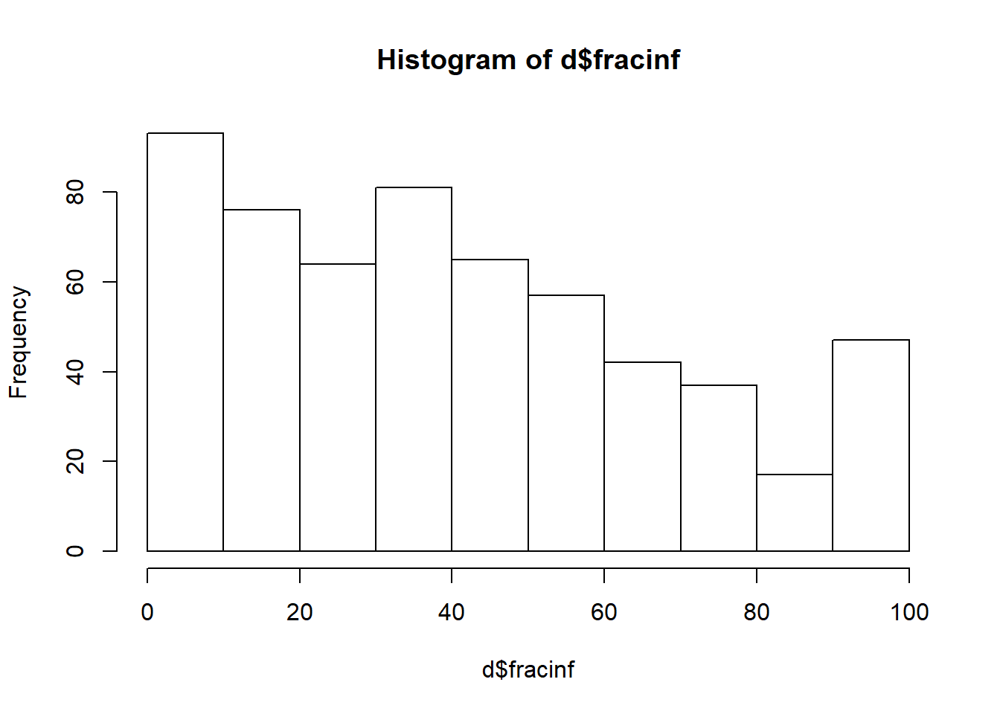
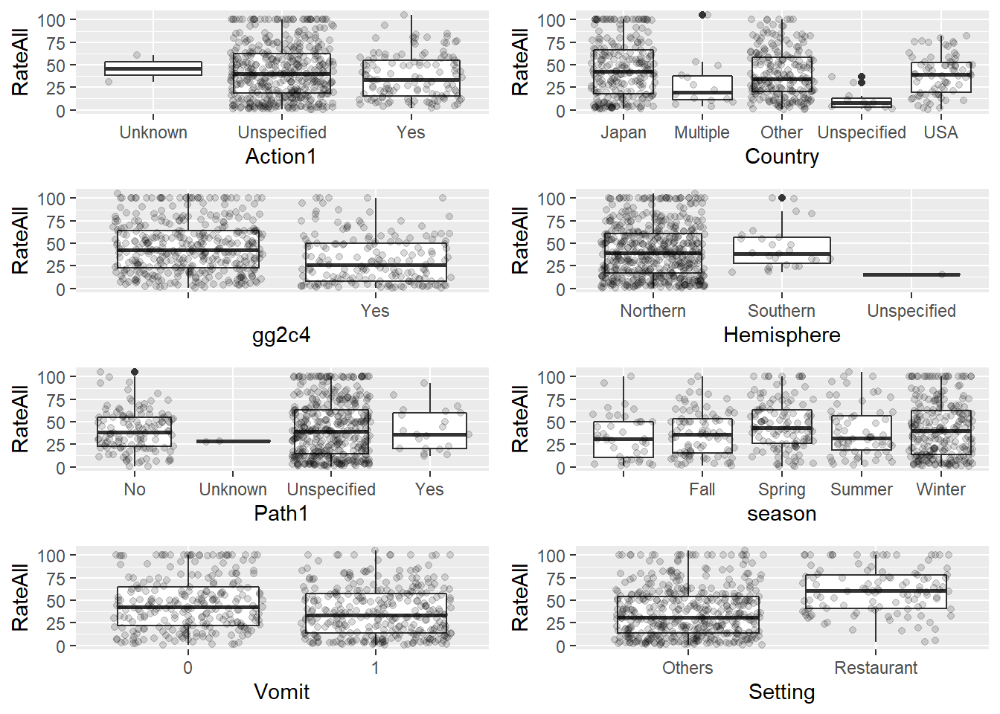

Continuous Outcome Analysis
TrangQuach
2019-11-01
Overview
This document will guide you through a few data analysis and model fitting tasks.
Below, I provide commentary and instructions, and you are expected to write all or some of the missing code to perform the steps I describe.
Note that I call the main data variable d. So if you see bits of code with that variable, it is the name of the data. You are welcome to give it different names, then just adjust the code snippets accordingly.
Project setup
We need a variety of different packages, which are loaded here. Install as needed. If you use others, load them here.
##
## Attaching package: 'dplyr'## The following objects are masked from 'package:stats':
##
## filter, lag## The following objects are masked from 'package:base':
##
## intersect, setdiff, setequal, unionlibrary('forcats')
library('ggplot2')
library('corrplot') #to make a correlation plot. You can use other options/packages.## corrplot 0.84 loaded## Loading required package: lattice## Loading required package: Formula## Loading required package: plotmo## Loading required package: plotrix## Loading required package: TeachingDemosData loading
We will be exploring and fitting a dataset of norovirus outbreaks. You can look at the codebook, which briefly explains the meaning of each variable. If you are curious, you can check some previous papers that we published using (slighly different versions of) this dataset here and here.
#Write code that loads the dataset and does a quick check to make sure the data loaded ok (using e.g. `str` and `summary` or similar such functions).
data_raw <- read.csv("norodata.csv")
str(data_raw)## 'data.frame': 1022 obs. of 139 variables:
## $ id : int 2 17 39 40 41 42 43 44 67 74 ...
## $ Author : Factor w/ 217 levels " kagawa-Okamoto",..: 3 9 16 16 16 16 16 16 25 28 ...
## $ Pub_Year : int 2005 2000 2009 2009 2009 2009 2009 2009 2009 1994 ...
## $ pubmedid : int 15841336 11071673 19205471 19205471 19205471 19205471 19205471 19205471 19440360 8202078 ...
## $ EpiCurve : Factor w/ 3 levels "","N","Y": 3 3 2 2 2 2 2 2 2 2 ...
## $ TDComment : Factor w/ 11 levels "","Just norovirus outbreak",..: 1 1 1 1 1 1 1 1 1 1 ...
## $ AHComment : Factor w/ 3 levels "","confirmed",..: 1 1 1 1 1 1 1 1 1 1 ...
## $ Trans1 : Factor w/ 6 levels "Environmental",..: 5 2 2 2 2 2 2 2 5 2 ...
## $ Trans1_O : int 0 0 0 0 0 0 0 0 0 0 ...
## $ Trans2 : Factor w/ 6 levels " (not applicable)",..: 1 5 1 1 1 1 1 1 1 1 ...
## $ Trans2_O : Factor w/ 2 levels "0","Direct contact with diarrhea or vomitus": 1 1 1 1 1 1 1 1 1 1 ...
## $ Trans3 : Factor w/ 6 levels " (not applicable)",..: 1 1 1 1 1 1 1 1 1 1 ...
## $ Trans3_O : Factor w/ 2 levels "0","smoking": 1 1 1 1 1 1 1 1 1 1 ...
## $ Risk1 : num 0 108 130 4 25 ...
## $ Risk2 : num NA NA NA NA NA NA NA NA NA NA ...
## $ RiskAll : num 0 108 130 4 25 ...
## $ Cases1 : int 15 43 27 4 15 6 40 10 116 45 ...
## $ Cases2 : int NA 22 NA NA NA NA NA NA NA NA ...
## $ CasesAll : int 15 65 27 4 15 6 40 10 116 45 ...
## $ Rate1 : num NA 39.8 20.8 100 60 ...
## $ Rate2 : num NA NA NA NA NA NA NA NA NA NA ...
## $ RateAll : num 0 39.8 20.8 100 60 ...
## $ Hospitalizations : int 0 0 0 0 0 0 0 0 5 10 ...
## $ Deaths : int 0 0 0 0 0 0 0 0 0 0 ...
## $ Vehicle_1 : Factor w/ 126 levels "0","Aerosolized vomit",..: 1 6 1 1 1 1 1 1 1 73 ...
## $ Veh1 : Factor w/ 4 levels "No","Unknown",..: 3 4 3 3 3 3 3 3 3 4 ...
## $ Veh1_D_1 : Factor w/ 163 levels "0","aerosilized",..: 1 159 1 1 1 1 1 1 1 107 ...
## $ Veh2 : Factor w/ 2 levels "No","Yes": 1 2 1 1 1 1 1 1 1 1 ...
## $ Veh2_D_1 : Factor w/ 63 levels "","0","accommodation environment on day of arrival",..: 2 21 2 2 2 2 2 2 2 2 ...
## $ Veh3 : Factor w/ 2 levels "No","Yes": 1 1 1 1 1 1 1 1 1 1 ...
## $ Veh3_D_1 : Factor w/ 19 levels "","0","Brandy S ps",..: 2 2 2 2 2 2 2 2 2 2 ...
## $ PCRSect : Factor w/ 4 levels "Both","Capsid",..: 2 3 1 1 1 1 1 1 1 4 ...
## $ OBYear : Factor w/ 23 levels "0","1983","1990",..: 11 10 19 19 19 19 19 19 17 5 ...
## $ Hemisphere : Factor w/ 3 levels "Northern","Southern",..: 1 1 1 1 1 1 1 1 1 1 ...
## $ season : Factor w/ 5 levels "","Fall","Spring",..: 2 2 2 2 2 2 2 2 2 2 ...
## $ MeanI1 : int 0 0 0 0 0 0 0 0 0 0 ...
## $ MedianI1 : int 0 37 0 0 0 0 0 0 0 31 ...
## $ Range_S_I1 : num 0 0 0 0 0 0 0 0 0 2 ...
## $ Range_L_I1 : num 0 0 0 0 0 0 0 0 0 69 ...
## $ MeanD1 : num 0 0 0 0 0 0 0 0 0 0 ...
## $ MedianD1 : num 0 36 0 0 0 0 0 0 0 48 ...
## $ Range_S_D1 : num 0 0 0 0 0 0 0 0 0 10 ...
## $ Range_L_D1 : int 0 0 0 0 0 0 0 0 0 168 ...
## $ MeanA1 : num NA NA NA NA NA NA NA NA NA NA ...
## $ MedianA1 : num NA NA NA NA NA NA NA NA NA NA ...
## $ Range_Y_A1 : Factor w/ 49 levels "<1","0","0.167",..: 8 2 2 2 2 2 2 2 2 2 ...
## $ Range_O_A1 : num 2 0 0 0 0 0 0 0 0 0 ...
## $ Action1 : Factor w/ 4 levels "No","Unknown",..: 3 3 3 3 3 3 3 3 3 4 ...
## $ Action2_1 : Factor w/ 186 levels "","\tContami ted batch withdrawn from market; Finnish authorities issued alert through Rapid Alert System for Food"| __truncated__,..: 5 5 5 5 5 5 5 5 5 108 ...
## $ Secondary : Factor w/ 3 levels "","No","Yes": 2 3 2 2 2 2 2 2 2 2 ...
## $ MeanI2 : int 0 0 0 0 0 0 0 0 0 0 ...
## $ MedianI2 : int 0 0 0 0 0 0 0 0 0 0 ...
## $ Range_S_I2 : int 0 0 0 0 0 0 0 0 0 0 ...
## $ Range_L_I2 : int 0 0 0 0 0 0 0 0 0 0 ...
## $ MeanD2 : int 0 0 0 0 0 0 0 0 0 0 ...
## $ MedianD2 : int 0 0 0 0 0 0 0 0 0 0 ...
## $ Range_S_D2 : int 0 0 0 0 0 0 0 0 0 0 ...
## $ Range_L_D2 : int 0 0 0 0 0 0 0 0 0 0 ...
## $ Mea.2 : int 0 0 0 0 0 0 0 0 0 0 ...
## $ Media.2 : int 0 0 0 0 0 0 0 0 0 0 ...
## $ Range_Y_A2 : int 0 0 0 0 0 0 0 0 0 0 ...
## $ Range_O_A2 : int 0 0 0 0 0 0 0 0 0 0 ...
## $ Comments_1 : Factor w/ 989 levels ""," turally recombi nt GII NV outbreak occurred in infant home in Sapporo, Japan where only residents who were up "| __truncated__,..: 918 938 978 979 980 981 984 982 350 853 ...
## $ Path1 : Factor w/ 4 levels "No","Unknown",..: 1 1 3 3 3 3 3 3 1 3 ...
## $ Path2_1 : Factor w/ 59 levels "","0","adenovirus",..: 2 2 2 2 2 2 2 2 2 2 ...
## $ Country : Factor w/ 22 levels "Australia","Austria",..: 12 22 17 17 17 17 17 17 17 22 ...
## $ Category : Factor w/ 12 levels "Daycare","Foodservice",..: 1 2 2 2 2 2 2 2 6 12 ...
## $ State : Factor w/ 36 levels "0","1","14 states: CA, UT, KS, WI, IL, IN, OH, GA, FL, NC, VA, WV, NY, PA,",..: 1 21 1 1 1 1 1 1 1 9 ...
## $ Setting_1 : Factor w/ 388 levels "\tPsychiatric Care Center adjoined",..: 121 32 39 310 39 352 39 310 201 3 ...
## $ StartMonth : int 11 9 9 10 11 11 11 11 11 11 ...
## $ EndMonth : int 12 9 0 0 0 0 0 0 11 11 ...
## $ GGA : int 2 1 2 0 2 0 0 0 2 0 ...
## $ CA : int 4 0 4 0 4 0 0 0 4 0 ...
## $ SA : Factor w/ 123 levels "0","100% identity w/AB05308, 96% identity w/MOH",..: 62 115 34 1 35 1 1 1 122 1 ...
## $ new_GGA : int 0 0 0 0 0 0 0 0 0 0 ...
## $ new_CA : int 0 0 0 0 0 0 0 0 0 0 ...
## $ new_SA : Factor w/ 27 levels "0","ARG320-USA",..: 1 1 1 1 1 1 1 1 1 1 ...
## $ SA_resolved_from : Factor w/ 9 levels "","abstraction",..: 1 1 1 1 1 1 1 1 1 1 ...
## $ GGB : int 0 0 0 0 0 0 0 0 0 0 ...
## $ CB : Factor w/ 18 levels "0","1","10","12",..: 1 1 1 1 1 1 1 1 1 1 ...
## $ SB : Factor w/ 38 levels "0","93.7% homology w/Saitama",..: 1 1 1 1 1 1 1 1 1 1 ...
## $ new_GGB : int 0 0 0 0 0 0 0 0 0 0 ...
## $ new_CB : int 0 0 0 0 0 0 0 0 0 0 ...
## $ new_SB : Factor w/ 14 levels "0","Birmingham",..: 1 1 1 1 1 1 1 1 1 1 ...
## $ SB_resolved_from : Factor w/ 6 levels "","abstraction",..: 1 1 1 1 1 1 1 1 1 1 ...
## $ GGC : int 0 0 0 0 0 0 0 0 0 0 ...
## $ CC : int 0 0 0 0 0 0 0 0 0 0 ...
## $ SC : Factor w/ 25 levels "0","95% homology with Sundsvall",..: 1 1 1 1 1 1 1 1 1 1 ...
## $ new_ggc : int 0 0 0 0 0 0 0 0 0 0 ...
## $ new_cc : int 0 0 0 0 0 0 0 0 0 0 ...
## $ new_sc : Factor w/ 5 levels "0","Fayetteville",..: 1 1 1 1 1 1 1 1 1 1 ...
## $ SC_resolved_from : Factor w/ 4 levels "","abstraction",..: 1 1 1 1 1 1 1 1 1 1 ...
## $ GGD : int 0 0 0 0 0 0 0 0 0 0 ...
## $ CD : Factor w/ 13 levels "0","1","12","14",..: 1 1 1 1 1 1 1 1 1 1 ...
## $ SD : Factor w/ 8 levels "0","Amsterdam",..: 1 1 1 1 1 1 1 1 1 1 ...
## $ new_ggd : int 0 0 0 0 0 0 0 0 0 0 ...
## $ new_cd : int 0 0 0 0 0 0 0 0 0 0 ...
## $ new_sd : int 0 0 0 0 0 0 0 0 0 0 ...
## $ SD_resolved_from : logi NA NA NA NA NA NA ...
## [list output truncated]## id Author Pub_Year pubmedid
## Min. : 1.0 Iritani : 83 Min. :1993 Min. : 7514927
## 1st Qu.: 256.2 Kageyama: 63 1st Qu.:2003 1st Qu.:12938042
## Median : 511.5 Lysen : 60 Median :2005 Median :16231127
## Mean : 511.6 Ozawa : 55 Mean :2005 Mean :15890029
## 3rd Qu.: 766.8 Hamano : 43 3rd Qu.:2008 3rd Qu.:18495859
## Max. :1024.0 Fukuda : 39 Max. :2011 Max. :21537761
## (Other) :679 NA's :3
## EpiCurve TDComment
## : 7 :994
## N:784 Not sure : 12
## Y:231 Not found in folder of articles : 6
## Not found on Pubmed : 3
## Just norovirus outbreak : 1
## No vomiting in some outbreaks but those are not specified: 1
## (Other) : 5
## AHComment Trans1 Trans1_O
## :1012 Environmental : 12 Min. :0
## confirmed : 8 Foodborne :391 1st Qu.:0
## probably not usable: 2 Person to Person:166 Median :0
## Unknown : 63 Mean :0
## Unspecified :318 3rd Qu.:0
## Waterborne : 72 Max. :0
##
## Trans2 Trans2_O
## (not applicable):928 0 :1021
## Environmental : 42 Direct contact with diarrhea or vomitus: 1
## Foodborne : 8
## Other : 1
## Person to Person : 42
## Waterborne : 1
##
## Trans3 Trans3_O Risk1
## (not applicable):1007 0 :1021 Min. : 0.00
## Environmental : 7 smoking: 1 1st Qu.: 0.00
## Foodborne : 4 Median : 10.00
## Other : 1 Mean : 374.57
## Person to Person : 2 3rd Qu.: 95.75
## Waterborne : 1 Max. :35000.00
##
## Risk2 RiskAll Cases1 Cases2
## Min. : 66.00 Min. : 0.0 Min. : 1.0 Min. : 1.00
## 1st Qu.: 72.25 1st Qu.: 0.0 1st Qu.: 9.0 1st Qu.: 4.25
## Median : 82.00 Median : 22.5 Median : 26.0 Median : 10.50
## Mean :135.06 Mean : 425.6 Mean : 125.2 Mean : 53.02
## 3rd Qu.:210.59 3rd Qu.: 119.5 3rd Qu.: 64.5 3rd Qu.: 26.75
## Max. :258.00 Max. :35000.0 Max. :32150.0 Max. :1113.00
## NA's :1014 NA's :120 NA's :7 NA's :976
## CasesAll Rate1 Rate2 RateAll
## Min. : 1.0 Min. : 0.4074 Min. : 6.00 Min. : 0.00
## 1st Qu.: 9.0 1st Qu.: 17.2500 1st Qu.:10.70 1st Qu.: 0.00
## Median : 26.0 Median : 37.5000 Median :17.50 Median : 15.28
## Mean : 127.6 Mean : 40.9253 Mean :16.89 Mean : 26.65
## 3rd Qu.: 66.0 3rd Qu.: 59.1875 3rd Qu.:21.90 3rd Qu.: 48.91
## Max. :32150.0 Max. :100.0000 Max. :29.69 Max. :105.00
## NA's :7 NA's :431 NA's :1012 NA's :108
## Hospitalizations Deaths Vehicle_1
## Min. : 0.0000 Min. :0.00000 0 :694
## 1st Qu.: 0.0000 1st Qu.:0.00000 Oysters : 46
## Median : 0.0000 Median :0.00000 oysters : 42
## Mean : 0.8856 Mean :0.05005 Shellfish : 21
## 3rd Qu.: 0.0000 3rd Qu.:0.00000 lettuce : 11
## Max. :197.0000 Max. :9.00000 Infected Persons: 10
## NA's :43 NA's :43 (Other) :198
## Veh1 Veh1_D_1 Veh2
## No : 1 0 :575 No :933
## Unknown : 82 Infected Persons: 60 Yes: 89
## Unspecified:493 Oysters : 47
## Yes :446 oysters : 42
## Shellfish : 20
## Food : 14
## (Other) :264
## Veh2_D_1 Veh3 Veh3_D_1
## 0 :814 No :1004 0 :895
## :120 Yes: 18 :109
## Infected Persons : 12 Contami ted Surfaces: 2
## Contami ted Surfaces : 8 Brandy S ps : 1
## salad : 4 Chicken : 1
## Vomit or Stool contact: 3 Coffee White : 1
## (Other) : 61 (Other) : 13
## PCRSect OBYear Hemisphere season
## Both :441 2006 :142 Northern :939 : 67
## Capsid :138 2002 :134 Southern : 81 Fall :164
## Polymerase :175 2004 :116 Unspecified: 2 Spring:222
## Unspecified:268 2003 : 97 Summer:126
## 1999 : 80 Winter:443
## 1998 : 76
## (Other):377
## MeanI1 MedianI1 Range_S_I1 Range_L_I1
## Min. : 0.0000 Min. : 0.000 Min. : 0.000 Min. : 0.000
## 1st Qu.: 0.0000 1st Qu.: 0.000 1st Qu.: 0.000 1st Qu.: 0.000
## Median : 0.0000 Median : 0.000 Median : 0.000 Median : 0.000
## Mean : 0.6644 Mean : 1.588 Mean : 1.066 Mean : 3.976
## 3rd Qu.: 0.0000 3rd Qu.: 0.000 3rd Qu.: 0.000 3rd Qu.: 0.000
## Max. :48.0000 Max. :65.000 Max. :36.000 Max. :168.000
##
## MeanD1 MedianD1 Range_S_D1 Range_L_D1
## Min. : 0.000 Min. : 0.000 Min. : 0.000 Min. : 0.0
## 1st Qu.: 0.000 1st Qu.: 0.000 1st Qu.: 0.000 1st Qu.: 0.0
## Median : 0.000 Median : 0.000 Median : 0.000 Median : 0.0
## Mean : 1.579 Mean : 2.552 Mean : 1.486 Mean : 12.7
## 3rd Qu.: 0.000 3rd Qu.: 0.000 3rd Qu.: 0.000 3rd Qu.: 0.0
## Max. :273.600 Max. :235.200 Max. :72.000 Max. :1248.0
##
## MeanA1 MedianA1 Range_Y_A1 Range_O_A1
## Min. : 0.0833 Min. : 0.747 0 :891 Min. : 0.000
## 1st Qu.:13.0000 1st Qu.: 9.000 1 : 10 1st Qu.: 0.000
## Median :39.0000 Median :29.000 18 : 9 Median : 0.000
## Mean :38.2923 Mean :29.485 23 : 7 Mean : 7.077
## 3rd Qu.:56.0000 3rd Qu.:45.000 16 : 6 3rd Qu.: 0.000
## Max. :89.3300 Max. :85.000 20 : 6 Max. :103.000
## NA's :961 NA's :973 (Other): 93
## Action1
## No : 3
## Unknown : 2
## Unspecified:803
## Yes :214
##
##
##
## Action2_1
## 0 :807
## recalled lettuce from wholesaler : 11
## Infection control practices essation of occupatio l therapy; cohort program; visiting restrictions; symptomatic staff sent home : 4
## Restaurant was cleaned, closed, then professio lly cleaned : 4
## Camp was clean, closed and the fi lly professio lly cleaned : 3
## exclude members of affected groups from water sports, activities with shared implements; provided dedicated latrines, washing facilities, drinking water; excluded from food handling, preparation; isolated until asymptomatic for 48 hours: 3
## (Other) :190
## Secondary MeanI2 MedianI2 Range_S_I2
## : 1 Min. : 0.0000 Min. : 0.00000 Min. : 0.0000
## No :972 1st Qu.: 0.0000 1st Qu.: 0.00000 1st Qu.: 0.0000
## Yes: 49 Median : 0.0000 Median : 0.00000 Median : 0.0000
## Mean : 0.1203 Mean : 0.04697 Mean : 0.2172
## 3rd Qu.: 0.0000 3rd Qu.: 0.00000 3rd Qu.: 0.0000
## Max. :81.0000 Max. :48.00000 Max. :78.0000
##
## Range_L_I2 MeanD2 MedianD2 Range_S_D2
## Min. : 0.0000 Min. :0 Min. :0 Min. : 0.00000
## 1st Qu.: 0.0000 1st Qu.:0 1st Qu.:0 1st Qu.: 0.00000
## Median : 0.0000 Median :0 Median :0 Median : 0.00000
## Mean : 0.4511 Mean :0 Mean :0 Mean : 0.02348
## 3rd Qu.: 0.0000 3rd Qu.:0 3rd Qu.:0 3rd Qu.: 0.00000
## Max. :168.0000 Max. :0 Max. :0 Max. :24.00000
##
## Range_L_D2 Mea.2 Media.2
## Min. : 0.00000 Min. : 0.00000 Min. : 0.00000
## 1st Qu.: 0.00000 1st Qu.: 0.00000 1st Qu.: 0.00000
## Median : 0.00000 Median : 0.00000 Median : 0.00000
## Mean : 0.09393 Mean : 0.08904 Mean : 0.04795
## 3rd Qu.: 0.00000 3rd Qu.: 0.00000 3rd Qu.: 0.00000
## Max. :72.00000 Max. :55.00000 Max. :49.00000
##
## Range_Y_A2 Range_O_A2
## Min. : 0.00000 Min. : 0.0000
## 1st Qu.: 0.00000 1st Qu.: 0.0000
## Median : 0.00000 Median : 0.0000
## Mean : 0.05773 Mean : 0.2211
## 3rd Qu.: 0.00000 3rd Qu.: 0.0000
## Max. :46.00000 Max. :80.0000
##
## Comments_1 Path1
## : 14 No :223
## 0 : 10 Unknown : 3
## 2 of 3, paper about genetic a lysis, 1 death: 2 Unspecified:716
## 3 of 3, limited information available : 2 Yes : 80
## Outbreak 10 of 47, limited information : 2
## outbreak A in Table 1 : 2
## (Other) :990
## Path2_1 Country Category
## 0 :833 Other :447 Foodservice :309
## :109 Japan :371 Leisure :153
## coliforms : 8 USA :108 Nursing Home:138
## Astrovirus : 4 Australia : 21 Hospital :126
## E.coli : 4 Multiple : 17 Other : 99
## Campylobacter jejuni: 3 Unspecified: 15 School : 68
## (Other) : 61 (Other) : 43 (Other) :129
## State Setting_1 StartMonth EndMonth
## 0 :909 0 :110 Min. : 0.000 Min. : 0.000
## NC : 19 Restaurant :104 1st Qu.: 2.000 1st Qu.: 0.000
## NY : 10 restaurant : 70 Median : 4.000 Median : 0.000
## AK : 9 Hospital : 39 Mean : 5.532 Mean : 2.414
## FL : 7 Hotel : 25 3rd Qu.:10.000 3rd Qu.: 3.000
## MI : 6 Nursing Care Center: 25 Max. :12.000 Max. :12.000
## (Other): 62 (Other) :649
## GGA CA SA new_GGA
## Min. :0.000 Min. : 0.000 0 :693 Min. :0.0000
## 1st Qu.:1.000 1st Qu.: 0.000 Lordsdale : 45 1st Qu.:0.0000
## Median :2.000 Median : 2.000 Farmington Hills: 18 Median :0.0000
## Mean :1.501 Mean : 2.551 GII.4 2006b : 16 Mean :0.1693
## 3rd Qu.:2.000 3rd Qu.: 4.000 GII.4 2006a : 15 3rd Qu.:0.0000
## Max. :2.000 Max. :17.000 Desert Shield : 14 Max. :2.0000
## NA's :1 (Other) :221
## new_CA new_SA
## Min. :0.0000 0 :926
## 1st Qu.:0.0000 Toronto-CAN93: 15
## Median :0.0000 Grimsby-like : 11
## Mean :0.2984 Hawaii-USA94 : 10
## 3rd Qu.:0.0000 CBW94-AUS : 7
## Max. :9.0000 Chiba-JPN00 : 7
## (Other) : 46
## SA_resolved_from
## :926
## Zheng : 69
## abstraction : 17
## http://onlinelibrary.wiley.com/doi/10.1002/jmv.20403/pdf : 3
## origi l article : 3
## Diagnosis of Norovirus outbreaks by commercial ELISA or RT-PCR, de Bruin et al.: 1
## (Other) : 3
## GGB CB SB new_GGB
## Min. :0.0000 0 :886 0 :976 Min. :0.0000
## 1st Qu.:0.0000 4 : 36 Lordsdale : 3 1st Qu.:0.0000
## Median :0.0000 3 : 22 Toronto : 3 Median :0.0000
## Mean :0.3082 2 : 15 Birmingham : 2 Mean :0.0274
## 3rd Qu.:0.0000 6 : 15 GII.4 2006b: 2 3rd Qu.:0.0000
## Max. :2.0000 1 : 9 GII.b : 2 Max. :2.0000
## (Other): 39 (Other) : 34
## new_CB new_SB
## Min. : 0.00000 0 :1005
## 1st Qu.: 0.00000 Birmingham : 2
## Median : 0.00000 Chiba-JPN00 : 2
## Mean : 0.06947 Lsdale-GBR : 2
## 3rd Qu.: 0.00000 Toronto-CAN93: 2
## Max. :14.00000 Bristol-GBR93: 1
## (Other) : 8
## SB_resolved_from
## :1005
## abstraction : 2
## Evaluation of a broadly reactive nucleic acid sequence based amplification assay for the detection of noroviruses in faecal material, Moore et al: 2
## http://kcdc.labkm.net/vsd/database/gene_list.jsp?orgId=6&cuTag=CL0005&page=910&orderCol=&orderTag=&searchIn=&textIn= : 1
## origi l article/Zheng : 2
## Zheng : 10
##
## GGC CC
## Min. :0.0000 Min. : 0.000
## 1st Qu.:0.0000 1st Qu.: 0.000
## Median :0.0000 Median : 0.000
## Mean :0.1223 Mean : 0.365
## 3rd Qu.:0.0000 3rd Qu.: 0.000
## Max. :2.0000 Max. :17.000
##
## SC
## 0 :997
## H104-94-J : 2
## 95% homology with Sundsvall : 1
## 99 and 98% deduced amino acid identity with FAY=98 and KAS/00 , respectively (both 92% nt identity): 1
## BCCDC04-007 : 1
## Chiba : 1
## (Other) : 19
## new_ggc new_cc new_sc
## Min. :0.000000 Min. : 0.0000 0 :1018
## 1st Qu.:0.000000 1st Qu.: 0.0000 Fayetteville: 1
## Median :0.000000 Median : 0.0000 Leeds-GBR00 : 1
## Mean :0.006849 Mean : 0.0274 MOH99-HUN : 1
## 3rd Qu.:0.000000 3rd Qu.: 0.0000 Whiterose : 1
## Max. :2.000000 Max. :14.0000
##
## SC_resolved_from
## :1018
## abstraction : 1
## Evaluation of a broadly reactive nucleic acid sequence based amplification assay for the detection of noroviruses in faecal material, Moore et al: 1
## Zheng : 2
##
##
##
## GGD CD SD
## Min. :0.00000 0 :990 0 :1014
## 1st Qu.:0.00000 3 : 6 GII.b : 2
## Median :0.00000 4 : 5 Amsterdam : 1
## Mean :0.06067 8 : 5 BCCDC03-008 : 1
## 3rd Qu.:0.00000 6 : 4 Bristol : 1
## Max. :2.00000 15 : 3 Harrow/2001/UK_Mexico/1989/MX: 1
## (Other): 9 (Other) : 2
## new_ggd new_cd new_sd SD_resolved_from
## Min. :0 Min. :0 Min. :0 Mode:logical
## 1st Qu.:0 1st Qu.:0 1st Qu.:0 NA's:1022
## Median :0 Median :0 Median :0
## Mean :0 Mean :0 Mean :0
## 3rd Qu.:0 3rd Qu.:0 3rd Qu.:0
## Max. :0 Max. :0 Max. :0
##
## StrainOther
## 0 :980
## closest relative is SRSV/Apeldoorn/97/NET w/98% nucleotide identity over 219 bp of the polymerase region and 96% (over 283 bp) was also seen w/strain Arg320: 2
## GII/8 : 2
## GIIb : 2
## 1 : 1
## 100% similar to the calicivirus strains of S031/94/UK : 1
## (Other) : 34
## strainother_rc
## 0 :1013
## closest relative is SRSV/Apeldoorn/97/NET w/98% nucleotide identity over 219 bp of the polymerase re: 2
## 100% similar to the calicivirus strains of S031/94/UK : 1
## 2 strains only referred to as strain A and strain B : 1
## 6 : 1
## article discussed 2 separate strains found, but didn't identify either : 1
## (Other) : 3
## gge ce se
## 0 :994 Min. : 0.0000 0 :1012
## 1 : 7 1st Qu.: 0.0000 GIIb : 2
## 2 : 20 Median : 0.0000 BCCDC04-002 : 1
## Sindlesham: 1 Mean : 0.1272 Fayetteville: 1
## 3rd Qu.: 0.0000 GII.4 2006a : 1
## Max. :17.0000 GII.4a 2004 : 1
## (Other) : 4
## SE_resolved_from ggf cf
## :1016 Min. :0.00000 Min. : 0.00000
## abstraction of StrainOther: 6 1st Qu.:0.00000 1st Qu.: 0.00000
## Median :0.00000 Median : 0.00000
## Mean :0.02055 Mean : 0.08317
## 3rd Qu.:0.00000 3rd Qu.: 0.00000
## Max. :2.00000 Max. :14.00000
##
## sf ggg cg sg
## 0 :1021 Min. :0.0000 Min. : 0.00000 0 :1021
## BCCDC03-013: 1 1st Qu.:0.0000 1st Qu.: 0.00000 BCCDC04-006: 1
## Median :0.0000 Median : 0.00000
## Mean :0.0137 Mean : 0.05186
## 3rd Qu.:0.0000 3rd Qu.: 0.00000
## Max. :2.0000 Max. :12.00000
##
## ggh ch sh
## Min. :0.000000 Min. : 0.00000 0 :1020
## 1st Qu.:0.000000 1st Qu.: 0.00000 BCCDC03-032: 1
## Median :0.000000 Median : 0.00000 GIIb : 1
## Mean :0.006849 Mean : 0.02251
## 3rd Qu.:0.000000 3rd Qu.: 0.00000
## Max. :2.000000 Max. :14.00000
##
## ggi ci si
## Min. :0.000000 Min. :0.000000 0 :1021
## 1st Qu.:0.000000 1st Qu.:0.000000 BCCDC04-003: 1
## Median :0.000000 Median :0.000000
## Mean :0.002935 Mean :0.003914
## 3rd Qu.:0.000000 3rd Qu.:0.000000
## Max. :2.000000 Max. :3.000000
##
## ggj cj sj
## Min. :0.000000 Min. :0.000000 0 :1021
## 1st Qu.:0.000000 1st Qu.:0.000000 BCCDC04-008: 1
## Median :0.000000 Median :0.000000
## Mean :0.002935 Mean :0.006849
## 3rd Qu.:0.000000 3rd Qu.:0.000000
## Max. :2.000000 Max. :5.000000
##
## Country2 Veh1_D_2
## 0 :547 0 :711
## Sweden : 71 Oyster : 68
## United Kingdom : 51 Shellfish: 23
## The Netherlands: 49 oyster : 16
## Australia : 41 Oysters : 12
## Finland : 26 lettuce : 11
## (Other) :237 (Other) :181
## Veh2_D_2 Veh3_D_2
## 0 :1000 0 :1020
## Salad : 3 house salad : 1
## areas contami ted with index case vomit: 1 udon noodles: 1
## assymptomatic foodhandler : 1
## buffet spring rolls : 1
## coleslaw : 1
## (Other) : 15
## Action2_2
## 0 :887
## groups with affected members were excluded from camp activities and limited to specific bathrooms and water fountains : 3
## professio lly cleaned restaurant : 3
## 1 week sanitation and sterilization of the ship after cruise 1, however outbreak continued on the next 5 cruises : 1
## admission to the hospital closed 3 times, 34/41 guidlines for NoV outbreak control covered, control implemented via the hospital hygiene team: 1
## admissions suspended, handwashing, enviornmental cleaning, visitor restriction, linen cleaning, staff policy etc. : 1
## (Other) :126
## Comments_2
## 0 :318
## : 22
## Hosp A ward 7C : 2
## Hosp A ward 7E : 2
## Outbreak 13 of 19 Iritani 2008 : 2
## 1 of 12 outbreaks reported in shinkawa article; cases/persons at risk and the subsequent attack rate includes the food handler data presented in table 1: 1
## (Other) :675
## Path2_2 Setting_2 category1
## 0 :976 0 :350 Foodservice :309
## Kobuvirus : 4 Restaurant :154 Hospital/Nursi:225
## Adenovirus : 2 : 22 Leisure :153
## astrovirus : 2 Hotel : 18 Other :120
## Clostridium difficile: 2 cruise ship: 14 School/Daycare: 84
## rotavirus : 2 multiple : 11 Unknown : 74
## (Other) : 34 (Other) :453 (Other) : 57
## strainothergg2c4 gg2c4 Vomit IncInd
## Min. :0.000000 :716 Min. :0.0000 Min. :0.000000
## 1st Qu.:0.000000 Yes:306 1st Qu.:0.0000 1st Qu.:0.000000
## Median :0.000000 Median :0.0000 Median :0.000000
## Mean :0.005871 Mean :0.4907 Mean :0.001957
## 3rd Qu.:0.000000 3rd Qu.:1.0000 3rd Qu.:0.000000
## Max. :1.000000 Max. :1.0000 Max. :1.000000
## NA's :1
## SymInd PooledLat PooledSym PooledAge
## Min. :0.000000 Min. : 0.000 Min. : 0.000 Min. : 0.000
## 1st Qu.:0.000000 1st Qu.: 0.000 1st Qu.: 0.000 1st Qu.: 0.000
## Median :0.000000 Median : 0.000 Median : 0.000 Median : 0.000
## Mean :0.005871 Mean : 1.889 Mean : 3.154 Mean : 2.401
## 3rd Qu.:0.000000 3rd Qu.: 0.000 3rd Qu.: 0.000 3rd Qu.: 0.000
## Max. :1.000000 Max. :67.500 Max. :96.000 Max. :85.000
## NA's :2
## IndividualLatent IndividualSymptomatic
## Mode:logical :1017
## NA's:1022 Y: 5
##
##
##
##
## Data exploration and cleaning
Investigating the outcome of interest
Let’s assume that our main outcome of interest is the fraction of individuals that become infected in a given outbreak. The data reports that outcome (called RateAll), but we’ll also compute it ourselves so that we can practice creating new variables. To do so, take a look at the data (maybe peek at the Codebook) and decide which of the existing variables you should use to compute the new one. This new outcome variable will be added to the data frame.
# Use the `mutate()` function from the `dplyr` package to create a new column with this value. Call the new variable `fracinf`.
d <- data_raw %>% dplyr::mutate(fracinf=(CasesAll)*100/RiskAll)
# I (Trang) compare `fracinf` and `RateAll`. Some of them are the same, but some of them are different. I do not know why. The result "Inf" is due to the RiskAll is equal 0.
tem <-d %>% select(Cases1, Cases2, CasesAll, RiskAll, fracinf, RateAll)
print(tem, max=100)## Cases1 Cases2 CasesAll RiskAll fracinf RateAll
## 1 15 NA 15 0.00000 Inf 0.000000
## 2 43 22 65 108.00000 60.185185 39.814815
## 3 27 NA 27 130.00000 20.769231 20.769231
## 4 4 NA 4 4.00000 100.000000 100.000000
## 5 15 NA 15 25.00000 60.000000 60.000000
## 6 6 NA 6 8.00000 75.000000 75.000000
## 7 40 NA 40 48.00000 83.333333 83.333333
## 8 10 NA 10 12.00000 83.333333 83.333333
## 9 116 NA 116 220.00000 52.727273 54.200000
## 10 45 NA 45 71.42857 63.000000 63.000000
## 11 180 4 184 0.00000 Inf 0.000000
## 12 191 NA 191 509.00000 37.524558 37.524558
## 13 19 NA 19 36.00000 52.777778 53.000000
## 14 704 NA 704 0.00000 Inf 0.000000
## 15 369 NA 369 2925.00000 12.615385 12.615385
## 16 131 NA 131 3826.00000 3.423941 3.423941
## [ reached 'max' / getOption("max.print") -- omitted 1006 rows ]Note the notation dplyr:: in front of mutate. This is not strictly necessary, but it helps in 2 ways. First, this tells the reader explicitly from which package the function comes. This is useful for quickly looking at the help file of the function, or if we want to adjust which packages are loaded/used. It also avoids occasional confusion if a function exists more than once (e.g. filter exists both in the stats and dplyr package). If the package is not specified, R takes the function from the package that was loaded last. This can sometimes produce strange error messages. I thus often (but not always) write the package name in front of the function.
As you see in the Rmd file, the previous text box is created by placing texts between the ::: symbols and specifying some name. This allows you to apply your own styling to specific parts of the text. You define your style in a css file (here called customstyles.css), and you need to list that file in the _site.yml file. The latter file also lets you change the overall theme. You can choose from the library of free Bootswatch themes.
Use both text summaries and plots to take a look at the new variable you created to see if everything looks ok or if we need further cleaning.
#Write code that takes a look at the values of the `fracinf` variable you created. Look at both text summaries and a figure.
summary(d$fracinf)## Min. 1st Qu. Median Mean 3rd Qu. Max. NA's
## 0.3995 28.8324 63.0789 Inf Inf Inf 120
# Calculate the number of inf result
x <- d$fracinf==Inf
sum(x, na.rm = TRUE) # There are 323 observation with inf result## [1] 323We notice there are NAs in this variable and the distribution is not normal. The latter is somewhat expected since our variable is a proportion, so it has to be between 0 and 1. There are also a lot of infinite values. Understand where they come from.
Let’s take a look at the RateAll variable recorded in the dataset and compare it to ours. First, create a plot that lets you quickly see if/how the variables differ.
# also plot the difference of the 2 variables
hist(d$RateAll-d$fracinf) # The difference of two variables is <= 10 units. # There are Approx. 100 observations with the discrepancy
# make sure you adjust so both are in the same unitsBoth ways of plotting the data show that for most outbreaks, the two ways of getting the outcome agree. So that’s good. But we need to look closer and resolve the problem with infinite values above. Check to see what the RateAll variable has for those infinite values.
#Write code that looks at the values of RateAll where we have inifinite values
# Calculate the number of inf result
x <- d$fracinf==Inf
sum(x, na.rm = TRUE) ## [1] 323## CasesAll RiskAll RateAll fracinf
## 1 15 0 0 Inf
## 2 184 0 0 Inf
## 3 704 0 0 Inf
## 4 20 0 0 Inf
## 5 14 0 0 Inf
## 6 14 0 0 Inf
## 7 22 0 0 Inf
## 8 15 0 0 Inf
## 9 25 0 0 Inf
## 10 17 0 0 Inf
## 11 13 0 0 Inf
## 12 22 0 0 Inf
## 13 11 0 0 Inf
## 14 14 0 0 Inf
## 15 25 0 0 Inf
## 16 14 0 0 Inf
## 17 146 0 0 Inf
## 18 80 0 0 Inf
## 19 112 0 0 Inf
## 20 130 0 0 Inf
## 21 36 0 0 Inf
## 22 26 0 0 Inf
## 23 2 0 0 Inf
## 24 21 0 0 Inf
## 25 30 0 0 Inf
## 26 116 0 0 Inf
## 27 24 0 0 Inf
## 28 70 0 0 Inf
## 29 22 0 0 Inf
## 30 35 0 0 Inf
## 31 40 0 0 Inf
## 32 15 0 0 Inf
## 33 50 0 0 Inf
## 34 20 0 0 Inf
## 35 110 0 0 Inf
## 36 50 0 0 Inf
## 37 16 0 0 Inf
## 38 5 0 0 Inf
## 39 200 0 0 Inf
## 40 50 0 0 Inf
## 41 24 0 0 Inf
## 42 55 0 0 Inf
## 43 9 0 0 Inf
## 44 21 0 0 Inf
## 45 163 0 0 Inf
## 46 25 0 0 Inf
## 47 35 0 0 Inf
## 48 80 0 0 Inf
## 49 35 0 0 Inf
## 50 3 0 0 Inf
## 51 33 0 0 Inf
## 52 11 0 0 Inf
## 53 15 0 0 Inf
## 54 51 0 0 Inf
## 55 3 0 0 Inf
## 56 279 0 0 Inf
## 57 69 0 0 Inf
## 58 27 0 0 Inf
## 59 29 0 0 Inf
## 60 28 0 0 Inf
## 61 184 0 0 Inf
## 62 66 0 0 Inf
## 63 17 0 0 Inf
## 64 16 0 0 Inf
## 65 12 0 0 Inf
## 66 19 0 0 Inf
## 67 524 0 0 Inf
## 68 69 0 0 Inf
## 69 276 0 0 Inf
## 70 57 0 0 Inf
## 71 7 0 0 Inf
## 72 29 0 0 Inf
## 73 26 0 0 Inf
## 74 5 0 0 Inf
## 75 4 0 0 Inf
## [ reached 'max' / getOption("max.print") -- omitted 248 rows ]There are 323 observation with infinite result
For the inf result, RateAll has the value as 0
You should find that all of the reported values are 0. So what makes more sense? You should have figured out that the infinite values in our computed variables arise because the RiskAll variable is 0. That variable contains the total number of persons at risk for an outbreak. If nobody is at risk of getting infected, of course, we can’t get any infected. So RateAll being 0 is technically correct. But does it make sense to include “outbreaks” in our analysis where nobody is at risk of getting infected? One should question how those got into the spreadsheet in the first place.
Having to deal with “weirdness” in your data like this example is common. You often need to make a decision based on best judgment.
Here, I think that if nobody is at risk, we shouldn’t include those outbreaks in further analysis. Thus, we’ll go with our computed outcome and remove all observations that have missing or infinite values for the outcome of interest, since those can’t be used for model fitting. Thus, we go ahead and remove any observations that have un-useable values in the outcome.
#Write code that removes all observations that have an outcome that is not very useful, i.e. either NA or infinity. Then look at the outcome variable again to make sure things are fixed. Also check the size of the new dataset to see by how much it shrunk.
d2 <- d%>% filter(!is.na(fracinf) & fracinf != Inf)You should find that we lost a lot of data, we are down to 579 observations (from a starting 1022). That would be troublesome for most studies if that would mean subjects drop out (that could lead to bias). Here it’s maybe less problematic since each observation is an outbreak collected from the literature. Still, dropping this many could lead to bias if all the ones that had NA or Infinity were somehow systematically different. It would be useful to look into and discuss in a real analysis.
Wrangling the predictors
Not uncommon for real datasets, this one has a lot of variables. Many are not too meaningful for modeling. Our question is what predicts the fraction of those that get infected, i.e., the new outcome we just created. We should first narrow down the predictor variables of interest based on scientific grounds.
For this analysis exercise, we just pick the following variables for further analysis: Action1, CasesAll, Category, Country, Deaths, GG2C4, Hemisphere, Hospitalizations, MeanA1, MeanD1, MeanI1, MedianA1, MedianD1, MedianI1, OBYear, Path1, RiskAll, Season, Setting, Trans1, Vomit. Of course, we also need to keep our outcome of interest.
Note that - as often happens for real data - there are inconsistencies between the codebook and the actual datasheet. Here, names of variables and spelling in the codebook do not fully agree with the data. The above list of variables is based on codebook, and you need to make sure you get the right names from the data when selecting those variables.
## [1] "Action1" "Action2_1"
## [3] "Action2_2" "AHComment"
## [5] "Author" "CA"
## [7] "Cases1" "Cases2"
## [9] "CasesAll" "Category"
## [11] "category1" "CB"
## [13] "CC" "CD"
## [15] "ce" "cf"
## [17] "cg" "ch"
## [19] "ci" "cj"
## [21] "Comments_1" "Comments_2"
## [23] "Country" "Country2"
## [25] "Deaths" "EndMonth"
## [27] "EpiCurve" "fracinf"
## [29] "gg2c4" "GGA"
## [31] "GGB" "GGC"
## [33] "GGD" "gge"
## [35] "ggf" "ggg"
## [37] "ggh" "ggi"
## [39] "ggj" "Hemisphere"
## [41] "Hospitalizations" "id"
## [43] "IncInd" "IndividualLatent"
## [45] "IndividualSymptomatic" "Mea.2"
## [47] "MeanA1" "MeanD1"
## [49] "MeanD2" "MeanI1"
## [51] "MeanI2" "Media.2"
## [53] "MedianA1" "MedianD1"
## [55] "MedianD2" "MedianI1"
## [57] "MedianI2" "new_CA"
## [59] "new_CB" "new_cc"
## [61] "new_cd" "new_GGA"
## [63] "new_GGB" "new_ggc"
## [65] "new_ggd" "new_SA"
## [67] "new_SB" "new_sc"
## [69] "new_sd" "OBYear"
## [71] "Path1" "Path2_1"
## [73] "Path2_2" "PCRSect"
## [75] "PooledAge" "PooledLat"
## [77] "PooledSym" "Pub_Year"
## [79] "pubmedid" "Range_L_D1"
## [81] "Range_L_D2" "Range_L_I1"
## [83] "Range_L_I2" "Range_O_A1"
## [85] "Range_O_A2" "Range_S_D1"
## [87] "Range_S_D2" "Range_S_I1"
## [89] "Range_S_I2" "Range_Y_A1"
## [91] "Range_Y_A2" "Rate1"
## [93] "Rate2" "RateAll"
## [95] "Risk1" "Risk2"
## [97] "RiskAll" "SA"
## [99] "SA_resolved_from" "SB"
## [101] "SB_resolved_from" "SC"
## [103] "SC_resolved_from" "SD"
## [105] "SD_resolved_from" "se"
## [107] "SE_resolved_from" "season"
## [109] "Secondary" "Setting_1"
## [111] "Setting_2" "sf"
## [113] "sg" "sh"
## [115] "si" "sj"
## [117] "StartMonth" "State"
## [119] "StrainOther" "strainother_rc"
## [121] "strainothergg2c4" "SymInd"
## [123] "TDComment" "Trans1"
## [125] "Trans1_O" "Trans2"
## [127] "Trans2_O" "Trans3"
## [129] "Trans3_O" "Veh1"
## [131] "Veh1_D_1" "Veh1_D_2"
## [133] "Veh2" "Veh2_D_1"
## [135] "Veh2_D_2" "Veh3"
## [137] "Veh3_D_1" "Veh3_D_2"
## [139] "Vehicle_1" "Vomit"Your reduced dataset should contain 579 observations and 22 variables.
With this reduced dataset, we’ll likely still need to perform further cleaning. We can start by looking at missing data. While the summary function gives that information, it is somewhat tedious to pull out. We can just focus on NA for each variable and look at the text output, or for lots of predictors, a graphical view is easier to understand. The latter has the advantage of showing potential clustering of missing values.
# this code prints number of missing for each variable (assuming your dataframe is called d)
print(colSums(is.na(d3))) ## Action1 CasesAll Category Country
## 0 0 0 0
## Deaths gg2c4 Hemisphere Hospitalizations
## 25 0 0 25
## MeanA1 MeanD1 MeanI1 MedianA1
## 553 0 0 541
## MedianD1 OBYear Path1 RiskAll
## 0 0 0 0
## season Setting_1 Setting_2 Trans1
## 0 0 0 0
## Vomit RateAll
## 1 0# write code to use the visdat R package, add code that plots a heatmap of missing values
vis_dat(d3)It looks like we have a lot of missing data for the MeanA1 and MedianA1 variables. If we wanted to keep those variables, we would be left with very few observations. So let’s drop those two variables. After that, we will drop all observations that have missing data (seems to be Hospitalization and Deaths).
# write code to remove the 2 "A1" variables, then drop all remaining observations with NA
d4<- d3 %>%
select(-c(MeanA1, MedianA1)) %>%
drop_na()Let’s now check the format of each variable. Depending on how you loaded the data, some variables might not be in the right format. Make sure everything that should be numeric is numeric/integer, everything that should be a factor is a factor. There should be no variable coded as character. Once all variables have the right format, take a look at the data again.
## Observations: 553
## Variables: 20
## $ Action1 <fct> Unspecified, Unspecified, Unspecified, Unspec...
## $ CasesAll <int> 65, 27, 4, 15, 6, 40, 10, 116, 45, 191, 19, 3...
## $ Category <fct> Foodservice, Foodservice, Foodservice, Foodse...
## $ Country <fct> USA, Other, Other, Other, Other, Other, Other...
## $ Deaths <int> 0, 0, 0, 0, 0, 0, 0, 0, 0, 0, 0, 0, 0, 0, 0, ...
## $ gg2c4 <fct> , Yes, , Yes, , , , Yes, , , , , , , , Yes, Y...
## $ Hemisphere <fct> Northern, Northern, Northern, Northern, North...
## $ Hospitalizations <int> 0, 0, 0, 0, 0, 0, 0, 5, 10, 0, 0, 0, 0, 0, 0,...
## $ MeanD1 <dbl> 0, 0, 0, 0, 0, 0, 0, 0, 0, 0, 24, 0, 0, 0, 0,...
## $ MeanI1 <int> 0, 0, 0, 0, 0, 0, 0, 0, 0, 0, 0, 0, 0, 0, 0, ...
## $ MedianD1 <dbl> 36, 0, 0, 0, 0, 0, 0, 0, 48, 24, 0, 0, 0, 0, ...
## $ OBYear <fct> 1998, 2006, 2006, 2006, 2006, 2006, 2006, 200...
## $ Path1 <fct> No, Unspecified, Unspecified, Unspecified, Un...
## $ RiskAll <dbl> 108.00000, 130.00000, 4.00000, 25.00000, 8.00...
## $ season <fct> Fall, Fall, Fall, Fall, Fall, Fall, Fall, Fal...
## $ Setting_1 <fct> "Boxed lunch, football game", "buffet", "rest...
## $ Setting_2 <fct> 0, Buffet, Restaurant, Buffet, take out resta...
## $ Trans1 <fct> Foodborne, Foodborne, Foodborne, Foodborne, F...
## $ Vomit <int> 1, 1, 1, 1, 1, 1, 1, 1, 1, 1, 1, 1, 1, 1, 1, ...
## $ RateAll <dbl> 39.814815, 20.769231, 100.000000, 60.000000, ...## [1] "0" "1"- Vomit only has two values 0 and 1. This is different from what the codebook specify. I double check the excel file to make sure values of vomit variable be correct
Take another look at the data. You should find that for the dataset, most things look reasonable, but the variable Setting_1 has a lot of different levels/values. That many categories, most with only a single entry, will likely not be meaningful for modeling. One option is to drop the variable. But assume we think it’s an important variable to include and we are especially interested in the difference between restaurant settings and other settings. We could then create a new variable that has only two levels, Restaurant and Other.
#write code that creates a new variable called `Setting` based on `Setting_1` buth with only 2 levels, `Restaurant` and `Other`. Then remove the `Setting_1` variable. Note that restaurant is sometimes capitalized and sometimes not. You need to fix that first. For these lines of code, the 'Factor' chapter in R4DS might be helpful here.
#levels(d4$Setting_1)
strings <- c('Restaurant', 'restaurant', 'Restaruant')
d5 <- d4 %>%
mutate(set3 = as.character(Setting_1)) %>%
mutate(Setting = ifelse(str_detect(set3, paste(strings, collapse = "|")), 'Restaurant','Others')) %>%
mutate(Setting= factor(Setting)) %>%
select(-c(Setting_1, set3))Data visualization
Next, let’s create a few plots showing the outcome and the predictors.
#write code that produces plots showing our outcome of interest on the y-axis and each numeric predictor on the x-axis.
Deaths<- d5 %>% ggplot(aes(Deaths, RateAll)) + geom_point()
Hosp<- d5 %>% ggplot(aes(Hospitalizations, RateAll)) + geom_point()
MeanD1<- d5 %>% ggplot(aes(MeanD1, RateAll)) + geom_point()
MedianD1<- d5 %>% ggplot(aes(MedianD1, RateAll)) + geom_point()
MeanI1<- d5 %>% ggplot(aes(MeanI1, RateAll)) + geom_point()
d5 %>% ggplot(aes(OBYear, RateAll)) + geom_point()One thing I notice in the plots is that there are lots of zeros for many predictors and things look skewed. That’s ok, but means we should probably standardize these predictors. One strange finding (that I could have caught further up when printing the numeric summaries, but didn’t) is that there is (at least) one outbreak that has outbreak year reported as 0. That is, of course, wrong and needs to be fixed. There are different ways of fixing it, the best, of course, would be to trace it back and try to fix it with the right value. We won’t do that here. Instead, we’ll remove that observation.
# write code that figures out which observation(s) have 0 years and remove those from the dataset.
d6 <- d5 %>% filter(OBYear != 0) %>%
mutate(OBYear = factor(as.character(OBYear))) # remove the level "0" of the factor
# do some quick check to make sure OByear values are all reasonable now
levels(d6$OBYear)## [1] "1983" "1990" "1993" "1994" "1995" "1996" "1997" "1998" "1999" "2000"
## [11] "2001" "2002" "2003" "2004" "2005" "2006" "2007" "2008" "2009" "2010"Another useful check is to see if there are strong correlations between some of the numeric predictors. That might indicate collinearity, and some models can’t handle that very well. In such cases, one might want to remove a predictor. We’ll create a correlation plot of the numeric variables to inspect this.
# using e.g. the corrplot package (or any other you like), create a correlation plot of the numeric variables
d6_1 <- d6 %>% select_if(is.numeric)
mycor <- cor(d6_1)
corrplot(mycor, method = "color")
It doesn’t look like there are any very strong correlations between continuous variables, so we can keep them all for now.
Next, let’s create plots for the categorical variables, again our main outcome of interest on the y-axis.
#write code that produces plots showing our outcome of interest on the y-axis and each categorical predictor on the x-axis.
# d6_2 only include factor and outcome variables
RateAll <- d6$RateAll
d6_2 <- d6 %>%
select_if(is.factor) %>%
cbind(RateAll) %>%
select(-c(Setting_2, OBYear))
# Make 10 plots
mynames <- names(d6_2)
n<- length(mynames)-1
graph <- vector("list",n)
for (i in 1:n){
graph[[i]]<-d6_2 %>%
ggplot(aes_string(x=paste0(mynames[i]), y="RateAll")) +
geom_boxplot() +
geom_jitter(alpha=0.15)
}
# fixed the issue of x axis label which is too long and hard to read
graph[[8]]<- graph[[8]]+ theme(axis.text.x=element_text(angle=45, hjust=1, vjust=0.9),
text=element_text(size=9))
graph[[2]]<-graph[[2]]+ theme(axis.text.x=element_text(angle=45, hjust=1, vjust=0.9),
text=element_text(size=9))
# Make the facet graph
gridExtra::grid.arrange(graph[[1]], graph[[3]], graph[[4]], graph[[5]], graph[[6]],graph[[7]], graph[[9]], graph[[10]], ncol=2)
The plots do not look pretty, which is ok for exploratory. We can see that a few variables have categories with very few values (again, something we could have also seen using summary, but graphically it is usually easier to see). This will likely produce problems when we fit using cross-validation, so we should fix that. Options we have:
- Completely drop those variables if we decide they are not of interest after all.
- Recode values by combining, like we did above with the
Settingvariable. - Remove observations with those rare values.
Let’s use a mix of these approaches. We’ll drop the Category variable, we’ll remove the observation(s) with Unspecified in the Hemisphere variable, and we’ll combine Unknown with Unspecified for Action1 and Path1 variables.
# write code that implements the cleaning steps described above.
d7 <- d6 %>%
select(-c(Category)) %>%
filter(Hemisphere != "Unspecified") %>%
mutate(Action1 = fct_collapse(Action1, Unspecified = c("Unknown","Unspecified")))
d7$Action1_1 <- fct_collapse(d7$Action1, Unspecified = c("Unknown","Unspecified"))## Warning: Unknown levels in `f`: Unknown# then check again (e.g. with a plot) to make sure things worked
ggplot(d7, aes(Hemisphere, RateAll)) + geom_boxplot()## [1] "Action1" "Action1_1" "CasesAll"
## [4] "Country" "Deaths" "gg2c4"
## [7] "Hemisphere" "Hospitalizations" "MeanD1"
## [10] "MeanI1" "MedianD1" "OBYear"
## [13] "Path1" "RateAll" "RiskAll"
## [16] "season" "Setting" "Setting_2"
## [19] "Trans1" "Vomit"## Observations: 551
## Variables: 20
## $ Action1 <fct> Unspecified, Unspecified, Unspecified, Unspec...
## $ CasesAll <int> 65, 27, 4, 15, 6, 40, 10, 116, 45, 191, 19, 3...
## $ Country <fct> USA, Other, Other, Other, Other, Other, Other...
## $ Deaths <int> 0, 0, 0, 0, 0, 0, 0, 0, 0, 0, 0, 0, 0, 0, 0, ...
## $ gg2c4 <fct> , Yes, , Yes, , , , Yes, , , , , , , , Yes, Y...
## $ Hemisphere <fct> Northern, Northern, Northern, Northern, North...
## $ Hospitalizations <int> 0, 0, 0, 0, 0, 0, 0, 5, 10, 0, 0, 0, 0, 0, 0,...
## $ MeanD1 <dbl> 0, 0, 0, 0, 0, 0, 0, 0, 0, 0, 24, 0, 0, 0, 0,...
## $ MeanI1 <int> 0, 0, 0, 0, 0, 0, 0, 0, 0, 0, 0, 0, 0, 0, 0, ...
## $ MedianD1 <dbl> 36, 0, 0, 0, 0, 0, 0, 0, 48, 24, 0, 0, 0, 0, ...
## $ OBYear <fct> 1998, 2006, 2006, 2006, 2006, 2006, 2006, 200...
## $ Path1 <fct> No, Unspecified, Unspecified, Unspecified, Un...
## $ RiskAll <dbl> 108.00000, 130.00000, 4.00000, 25.00000, 8.00...
## $ season <fct> Fall, Fall, Fall, Fall, Fall, Fall, Fall, Fal...
## $ Setting_2 <fct> 0, Buffet, Restaurant, Buffet, take out resta...
## $ Trans1 <fct> Foodborne, Foodborne, Foodborne, Foodborne, F...
## $ Vomit <fct> 1, 1, 1, 1, 1, 1, 1, 1, 1, 1, 1, 1, 1, 1, 1, ...
## $ RateAll <dbl> 39.814815, 20.769231, 100.000000, 60.000000, ...
## $ Setting <fct> Others, Others, Restaurant, Others, Restauran...
## $ Action1_1 <fct> Unspecified, Unspecified, Unspecified, Unspec...## Action1 CasesAll Country Deaths
## 0 0 0 0
## gg2c4 Hemisphere Hospitalizations MeanD1
## 0 0 0 0
## MeanI1 MedianD1 OBYear Path1
## 0 0 0 0
## RiskAll season Setting_2 Trans1
## 0 0 0 0
## Vomit RateAll Setting Action1_1
## 0 0 0 0- At this stage, I have 11 factors and 7 numeric variables. I have additional 2 factors because I consider vomit and year as factors.
At this step, you should have a dataframe containing 551 observations, and 19 variables: 1 outcome, 9 numeric/integer predictors, and 9 factor variables. There should be no missing values.
Model fitting
We can finally embark on some modeling - or at least we can get ready to do so.
We will use a lot of the caret package functionality for the following tasks. You might find the package website useful as you try to figure things out.
Data splitting
Depending on the data and question, we might want to reserve some of the data for a final validation/testing step or not. Here, to illustrate this process and the idea of reserving some data for the very end, we’ll split things into a train and test set. All the modeling will be done with the train set, and final evaluation of the model(s) happens on the test set. We use the caret package for this.
#this code does the data splitting. I still assume that your data is stored in the `d` object.
#uncomment to run
RateAll <- d7$RateAll
d8 <- cbind(RateAll, d7 %>% select(-c(RateAll)))
colnames(d8)[colnames(d8)=="RateAll"] <- "fracinf"
set.seed(123)
trainset <- caret::createDataPartition(y = d8$fracinf, p = 0.7, list = FALSE)
data_train = d8[trainset,] #extract observations/rows for training, assign to new variable
data_test = d8[-trainset,] #do the same for the test setSince the above code involves drawing samples, and we want to do that reproducible, we also set a random number seed with set.seed(). With that, each time we perform this sampling, it will be the same, unless we change the seed. If nothing about the code changes, setting the seed once at the beginning is enough. If you want to be extra sure, it is a good idea to set the seed at the beginning of every code chunk that involves random numbers (i.e., sampling or some other stochastic/random procedure). We do that here.
A null model
Now let’s begin with the model fitting. We’ll start by looking at a null model, which is just the mean of the data. This is, of course, a stupid “model” but provides some baseline for performance.
#write code that computes the RMSE for a null model, which is just the mean of the outcome
RMSE(mean(d8$fracinf), d8$fracinf)## [1] 28.49974Single predictor models
Now we’ll fit the outcome to each predictor one at a time. To evaluate our model performance, we will use cross-validation and the caret package. Note that we just fit a linear model. caret itself is not a model. Instead, it provides an interface that allows easy access to many different models and has functions to do a lot of steps quickly - as you will see below. Most of the time, you can do all our work through the caret (or mlr) workflow. The problem is that because caret calls another package/function, sometimes things are not as clear, especially when you get an error message. So occasionally, if you know you want to use a specific model and want more control over things, you might want to not use caret and instead go straight to the model function (e.g. lm or glm or…). We’ve done a bit of that before, for the remainder of the class we’ll mostly access underlying functions through caret.
#There is probably a nicer tidyverse way of doing this. I just couldn't think of it, so did it this way.
knitr::opts_chunk$set( warning=FALSE)
set.seed(1111) #makes each code block reproducible
fitControl <- trainControl(method="repeatedcv",number=5,repeats=5) #setting CV method for caret
Npred <- ncol(data_train)-1 # number of predictors
resultmat <- data.frame(Variable = names(data_train)[-1], RMSE = rep(0,Npred)) #store values for RMSE for each variable
for (n in 2:ncol(data_train)) {
fit1 <- train( as.formula(paste("fracinf ~",names(data_train)[n])) , data = data_train, method = "lm", trControl = fitControl)
resultmat[n-1,2]= fit1$results$RMSE
} #loop over each predictor. For this to work, outcome must be in 1st column
print(resultmat)## Variable RMSE
## 1 Action1 28.25052
## 2 CasesAll 29.54805
## 3 Country 27.96070
## 4 Deaths 28.36509
## 5 gg2c4 27.63471
## 6 Hemisphere 28.25950
## 7 Hospitalizations 28.19574
## 8 MeanD1 28.27588
## 9 MeanI1 28.06606
## 10 MedianD1 28.25192
## 11 OBYear 25.49868
## 12 Path1 28.32823
## 13 RiskAll 27.50784
## 14 season 28.22407
## 15 Setting_2 25.64367
## 16 Trans1 26.56270
## 17 Vomit 27.89936
## 18 Setting 26.97993
## 19 Action1_1 28.21392This analysis shows 2 things that might need closer inspections. We get some error/warning messages, and most RMSE of the single-predictor models are not better than the null model. Usually, this is cause for more careful checking until you fully understand what is going on. But for this exercise, let’s blindly press on!
Multi-predictor models
Now let’s perform fitting with multiple predictors. Use the same setup as the code above to fit the outcome to all predictors at the same time. Do that for 3 different models: linear (lm), regression splines (earth), K nearest neighbor (knn). You might have to install/load some extra R packages for that. If that’s the case, caret will tell you.
knitr::opts_chunk$set( warning=FALSE)
set.seed(1111) #makes each code block reproducible
#write code that uses the train function in caret to fit the outcome to all predictors using the 3 methods specified.
fitlm <- train( as.formula(paste("fracinf ~",paste(names(data_train)[-1], collapse = "+"))) , data = data_train, method = "lm", trControl = fitControl)
fitearth <- train( as.formula(paste("fracinf ~",paste(names(data_train)[-1], collapse = "+"))) , data = data_train, method = "earth", trControl = fitControl)
fitknn <- train( as.formula(paste("fracinf ~",paste(names(data_train)[-1], collapse = "+"))) , data = data_train, method = "knn", trControl = fitControl)
fitlm$results$RMSE## [1] 35.01915## [1] 25.03134 14.40234 14.42350## [1] 10.35536 10.76657 11.11947#report the RMSE for each method. Note that knn and earth perform some model tuning (we'll discuss this soon) and report multiple RMSE. Use the lowest value.
data.frame(lm=fitlm$results$RMSE, earth=min(fitearth$results$RMSE), knn=min(fitknn$results$RMSE))## lm earth knn
## 1 35.01915 14.40234 10.35536So we find that some of these models do better than the null model and the single-predictor ones. KNN seems the best of those 3. Next, we want to see if pre-processing our data a bit more might lead to even better results.
Multi-predictor models with pre-processing
Above, we fit outcome and predictors without doing anything to them. Let’s see if some further processing improves the performance of our multi-predictor models.
First, we look at near-zero variance predictors. Those are predictors that have very little variation. For instance, for a categorical predictor, if 99% of the values are a single category, it is likely not a useful predictor. A similar idea holds for continuous predictors. If they have very little spread, they might likely not contribute much ‘signal’ to our fitting and instead mainly contain noise. Some models, such as trees, which we’ll cover soon, can ignore useless predictors and just remove them. Other models, e.g., linear models, are generally performing better if we remove such useless predictors.
Note that in general, one should apply all these processing steps to the training data only. Otherwise, you would use information from the test set to decide on data manipulations for all data (called data leakage). It is a bit hard to say when to make the train/test split. Above, we did a good bit of cleaning on the full dataset before we split. One could argue that one should split right at the start, then do the cleaning. However, this doesn’t work for certain procedures (e.g., removing observations with NA).
knitr::opts_chunk$set( warning=FALSE)
#write code using the caret function `nearZeroVar` to look at potential uninformative predictors. Set saveMetrics to TRUE. Look at the results
zero <- nearZeroVar(data_train, saveMetrics = TRUE)
zero## freqRatio percentUnique zeroVar nzv
## fracinf 2.500000 70.8010336 FALSE FALSE
## Action1 3.662651 0.5167959 FALSE FALSE
## CasesAll 1.391304 33.0749354 FALSE FALSE
## Country 1.220690 1.2919897 FALSE FALSE
## Deaths 94.750000 1.2919897 FALSE TRUE
## gg2c4 2.198347 0.5167959 FALSE FALSE
## Hemisphere 19.368421 0.5167959 FALSE TRUE
## Hospitalizations 91.250000 3.6175711 FALSE TRUE
## MeanD1 185.000000 3.6175711 FALSE TRUE
## MeanI1 188.000000 2.0671835 FALSE TRUE
## MedianD1 32.454545 3.6175711 FALSE TRUE
## OBYear 1.613636 4.9095607 FALSE FALSE
## Path1 3.179775 1.0335917 FALSE FALSE
## RiskAll 1.333333 57.6227390 FALSE FALSE
## season 2.058140 1.2919897 FALSE FALSE
## Setting_2 1.348485 41.6020672 FALSE FALSE
## Trans1 1.575472 1.5503876 FALSE FALSE
## Vomit 1.331325 0.5167959 FALSE FALSE
## Setting 4.160000 0.5167959 FALSE FALSE
## Action1_1 3.662651 0.5167959 FALSE FALSEYou’ll see that several variables are flagged as having near-zero variance. Look for instance at Deaths, you’ll see that almost all outbreaks have zero deaths. It is a judgment call if we should remove all those flagged as near-zero-variance or not. For this exercise, we will.
#write code that removes all variables with near zero variance from the data
zerovar <-rownames(zero[zero$nzv==TRUE,])
zerovar## [1] "Deaths" "Hemisphere" "Hospitalizations"
## [4] "MeanD1" "MeanI1" "MedianD1"data_train1 <- data_train %>% select(-c(zerovar))
# I left with 14 variables
# I do not like `Setting_2` variables and we have `Setting` variable. I will drop this one
data_train1 <- data_train1 %>% select(-c(Setting_2))You should be left with 13 variables (including the outcome).
Next, we noticed during our exploratory analysis that it might be useful to center and scale predictors. So let’s do that now. With caret, one can do that by providing the preProc setting inside the train function. Set it to center and scale the data, then run the 3 models from above again.
#write code that repeats the multi-predictor fits from above, but this time applies centering and scaling of variables.
fitlm1 <- train( as.formula(paste("fracinf ~",paste(names(data_train1)[-1], collapse = "+"))) , data = data_train1, method = "lm", trControl = fitControl, preProcess=c("center", "scale"))
fitearth1 <- train( as.formula(paste("fracinf ~",paste(names(data_train1)[-1], collapse = "+"))) , data = data_train1, method = "earth", trControl = fitControl,
preProcess=c("center", "scale"))
fitknn1 <- train( as.formula(paste("fracinf ~",paste(names(data_train1)[-1], collapse = "+"))) , data = data_train1,method = "knn", trControl = fitControl, preProcess=c("center", "scale"))
#look at the RMSE for the new fits
fitlm1$results$RMSE## [1] 24.88284## [1] 25.05335 14.19377 14.27500## [1] 23.34234 23.30515 23.21115data.frame(lm=fitlm1$results$RMSE, earth=min(fitearth1$results$RMSE), knn=min(fitknn1$results$RMSE))## lm earth knn
## 1 24.88284 14.19377 23.21115So it looks like the linear mode got a bit better, KNN actually got worse, and MARS didn’t change much. Since for KNN, “the data is the model”, removing some predictors might have had a detrimental impact. Though to say something more useful, I would want to look much closer into what’s going on and if these pre-processing steps are useful or not. For this exercise, let’s move on.
Model uncertainty
We can look at the uncertainty in model performance, e.g., the RMSE. Let’s look at it for the models fit to the un-processed data.
#Use the `resamples` function in caret to extract uncertainty from the 3 models fit to the data that doesn't have predictor pre-processing, then plot it
resamps <- resamples(list(mylm1= fitlm1,
myearth1 = fitearth1,
myknn1 = fitknn1))
resamps##
## Call:
## resamples.default(x = list(mylm1 = fitlm1, myearth1 = fitearth1, myknn1
## = fitknn1))
##
## Models: mylm1, myearth1, myknn1
## Number of resamples: 25
## Performance metrics: MAE, RMSE, Rsquared
## Time estimates for: everything, final model fit##
## Call:
## summary.resamples(object = resamps)
##
## Models: mylm1, myearth1, myknn1
## Number of resamples: 25
##
## MAE
## Min. 1st Qu. Median Mean 3rd Qu. Max. NA's
## mylm1 17.105417 19.205778 19.87029 19.71767 20.57767 21.40360 0
## myearth1 8.928279 9.590177 10.90700 10.87936 12.19441 12.96676 0
## myknn1 15.589993 17.201330 18.22822 18.49862 19.65480 21.67614 0
##
## RMSE
## Min. 1st Qu. Median Mean 3rd Qu. Max. NA's
## mylm1 22.14356 23.95508 24.38540 24.88284 25.38057 28.71895 0
## myearth1 11.59252 12.57020 14.16765 14.19377 15.70232 17.07979 0
## myknn1 20.61848 21.75903 23.22123 23.21115 24.15310 25.78759 0
##
## Rsquared
## Min. 1st Qu. Median Mean 3rd Qu. Max. NA's
## mylm1 0.1679297 0.2278573 0.2781871 0.2775772 0.3205407 0.3943585 0
## myearth1 0.6268981 0.6815630 0.7682732 0.7484791 0.7989453 0.8438456 0
## myknn1 0.2172152 0.2970902 0.3293052 0.3462200 0.4080468 0.4745467 0It seems that the model uncertainty for the outcome is fairly narrow for all models. We can (and in a real setting should) do further explorations to decide which model to choose. This is based part on what the model results are, and part on what we want. If we want a very simple, interpretable model, we’d likely use the linear model. If we want a model that has better performance, we might use MARS or - with the un-processed dataset - KNN.
Residual plots
For this exercise, let’s just pick one model. We’ll go with the best performing one, namely KNN (fit to non-pre-processed data). Let’s take a look at the residual plot.
#Write code to get model predictions for the outcome on the training data, and plot it as function of actual outcome values.
# I understand non-pre-processed data is data_train (I am not sure)
pred <- predict(fitknn1, newdata = data_train)
plot(pred, data_train$fracinf, xlab = "prediction of fracinf")#also compute residuals (the difference between prediction and actual outcome) and plot that
plot(data_train$fracinf, pred - data_train$fracinf)Both plots look ok, predicted vs. outcome is along the 45-degree line, and the residual plot shows no major pattern. Of course, for a real analysis, we would again want to dig a bit deeper. But we’ll leave it at this for now.
Final model evaluation
Let’s do a final check, evaluate the performance of our final model on the test set.
#Write code that computes model predictions and for test data, then compute SSR and RMSE.
pred_test <- predict(fitknn1, newdata = data_test)
RMSE(pred_test, data_test$fracinf)## [1] 24.85231## [1] 101292.5Since we have a different number of observations, the result isn’t expected to be quite the same as for the training data (despite dividing by sample size to account for that). But it’s fairly close, and surprisingly not actually worse. So the KNN model seems to be reasonable at predicting. Now if its performance is ‘good enough’ is a scientific question.
We will leave it at this, for now, we will likely (re)visit some other topics soon as we perform more such analysis exercises in upcoming weeks. But you are welcome to keep exploring this dataset and try some of the other bits and pieces we covered.